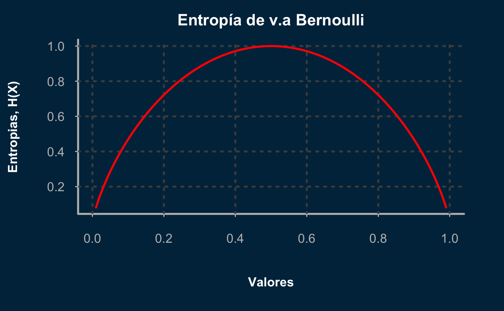
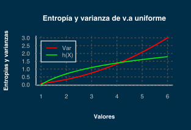
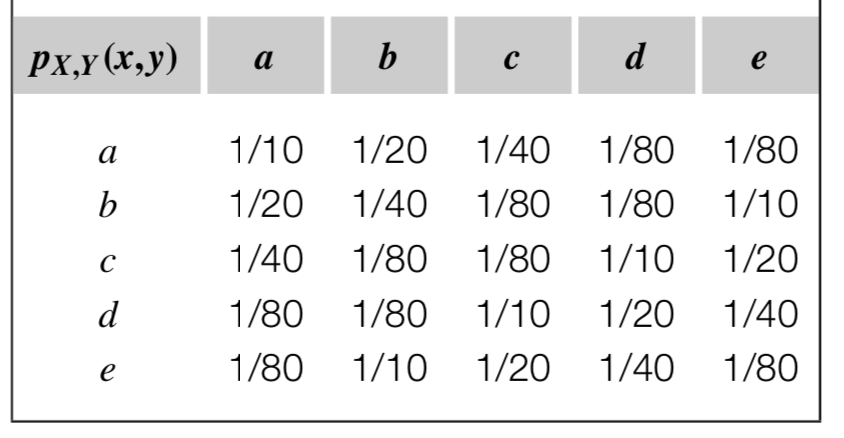
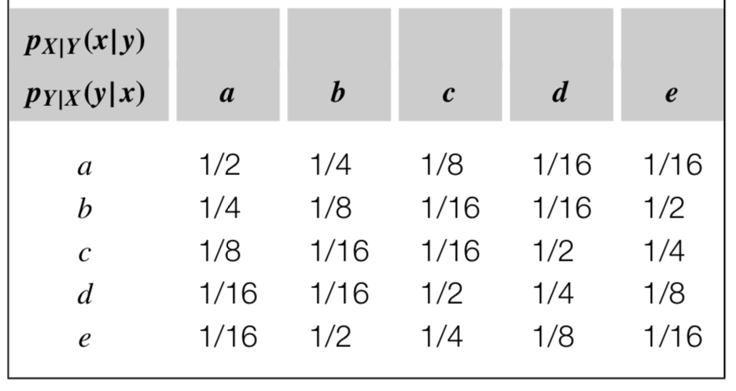
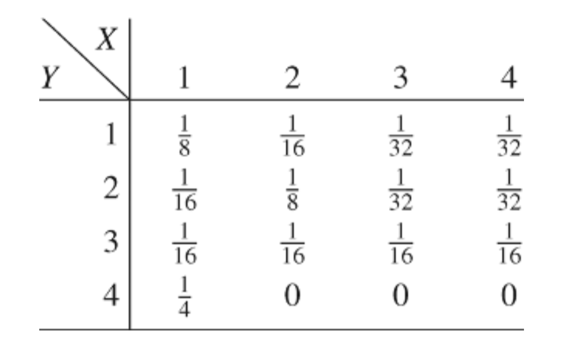
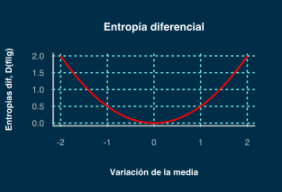
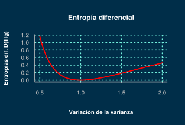

Telecomunicaciones
Teoría de la información
Dr. Julio César Ramírez-Pacheco
Presentación en: https://monoxide2000.github.io/intro_infoTheory
Contenido
- Contenido de información.
- Entropía de Shannon
- Entropía conjunta y condicional
- Información mutua.
- Divergencia.
- ¿Preguntas?.
Contenido de información
- Las definiciones que siguen se basan en espacios de probabilidad con un un espacio muestral $\Omega$, eventos $\mathcal{A}_i$ y medidas de probabilidad definidas en $P(\mathcal{A}_i$) ($0 \le P(\mathcal{A}_i) \le 1$ y $\sum_i{P(\mathcal{A}_i)}=1$)
- De igual forma aplica a variables aleatorias discretas, $X$, con alfabeto $\mathcal{X}$ y función de masa de probabilidad, $p_X(k) = \mbox{Pr}(X=k)$ ($\sum_{k\in \mathcal{X}}{p_X(k)=1}$).
Contenido de informacion: cont.
Sea $A$ un evento de un espacio de probabilidad con $P(A)\ne 0$, la cantidad de información de $A$ está definida como:
$$
I(A)= \log_D \left( \frac{1}{P(A)} \right)\\
$$
Donde $D$ es la base del logaritmo ($D=2$ resulta en bits)
Contenido de información: cont.
- Se puede notar que si $P(A_1) \ge P(A_2)$, entonces $I(A_1) \le I(A_2)$
- Además si $A_1$ y $A_2$ son eventos independientes ($P(A_1 \cap A_2)=P(A_1)P(A_2)$) entonces se tiene que $I(A_1\cap A_2)= I(A_1)+I(A_2)$
Pérdida de información
Sean $A$ y $B$ dos eventos, tal que $A \subset B$, entonces, la pérdida de información de $A$ usando la información de $B$ está dada por: $$L(A|B) = I(A)-I(B)=\log_D \frac{1}{P(A|B)}$$
Donde $D$ es la base del logaritmo.
Entropía
La entropía de una variable aleatoria $X$ con PMF $p(k)$ está definida como: $$H(X) = \sum_{k \in \mathcal{X}}{p(k)\log_D \frac{1}{p(k)}}$$
También se denota la entropía como $H(p)$, $H_p$, $H(p_1,p_2, \ldots, p_n)$, etc.
Entropía: continuación
- $H(X) = -\sum_{k\in \mathcal{X}}{p(k)\log p(k)}$
- $H(X) \ge 0$ ya que $0\le p(k) \le 1$
- $H_b(X) = \log_b(a)H_a(X)$
Entropía: propiedades
- Simetría: $H(p_1, p_2, \ldots, p_n) = H(p_{k(1)}, p_{k(2)}, \ldots , p_{k(n)})$
- Expansión: $H(p_1, p_2, \ldots, p_n) = H(0, p_1, p_2, \ldots, p_n)$
- Aditividad: $H(p_1q_1, \ldots, p_1q_n,\ldots, p_mq_1, \ldots p_mq_n)$= $H(p_1, \ldots, p_m)+H(q_1, \ldots, q_n)$
- Recursividad: $H(p_1, \ldots, p_n)=H(p_1+p_2,p_3, \ldots, p_n)+$$(p_1+p_2)H(\frac{p_1}{p_1+p_2}, \frac{p_2}{p_1+p_2})$
Entropía: Bernoulli
Sea $X$ una variable aleatoria con PMF: $$ p_X(k) = \begin{cases} p & k=1\\ (1-p)& k=0 \end{cases} $$ Calcular la entropía
Solución: Recordemos que $H(X) = -\sum_{k\in \mathcal{X}}p_k \log_D p_k$, por lo tanto:
$$ \begin{align} H(X) = -(1-p)\log_D(1-p)-p \log_D(p)\\ \end{align} $$
Entropía: Bernoulli
Entropía: continuación

Entropía diferencial
La entropía de una variable aleatoria continua $X$ con PDF $f(x)$ está definida como: $$h(X) = \int_{-\infty}^{+\infty}{f(x)\log_D \frac{1}{f(x)}},$$
donde D es el índice del logaritmo.
$h(X)$: uniforme
Sea $X$ una variable aleatoria con PDF: $$f(x) = \begin{cases} \frac{1}{b-a} & a < x < b\\ 0 & \mbox{en otro caso} \end{cases} $$ Calcular la entropía diferencial
Solución: Recordemos que $h(X) = -\int_{-\infty}^{+\infty}{f(x) \log f(x)}$, por lo tanto: $$ \begin{align} h(X) = & -\int_{a}^b{\left(\frac{1}{b-a}\right) \log(\frac{1}{b-a}) \, dx} = \frac{\log(b-a)}{b-a}\int_a^b{dx}\\ = & \frac{\log(b-a)}{b-a}\times (b-a) = \log(b-a)\\ \end{align} $$
VA Uniforme: Var vs $h(X)$
Entropía conjunta
La entropía conjunta de dos variables aleatorias $X$ e $Y$ con pmf conjunta $p(x,y)$ está dada por:
$$
H(X,Y)= -\sum_{x\in \mathcal{X}}\sum_{y \in \mathcal{Y}}{p(x,y) \log_D p(x,y)},
$$
que también puede ser expresada como $H(X,Y)=-\mathbb{E}{\log p(X,Y)}$.
Entropía condicional
La entropía condicional de la variable aleatoria $Y$ dado $X$ con pmf conjunta $p(x,y)$ y pmf condicional $p(x|y)$ está definida como:
$$
\begin{align}
H(Y|X)= &\sum_{x\in \mathcal{X}}{p(x)H(Y|X=x)}\\
=& \sum_{x\in \mathcal{X}}\sum_{y \in \mathcal{Y}}{p(x,y) \log_D \frac{1}{p(y|x)}},
\end{align}
$$
Ejercicios
Hallar $H(X), H(Y)$, $H(X,Y)$ y $H(X|Y)$ para:
Ejercicios: continuación
Solución:
Recordemos que $p(x) = \sum_{y \in \mathcal{Y}}p(x,y)$ y $p(y) = \sum_{x \in \mathcal{X}}p(x,y)$, por lo tanto:
$$
\begin{align}
p(x=a) = & \sum_{j=a}^e{p(a,j)}=\frac{1}{10}+\frac{1}{20}+\frac{1}{40}+\frac{1}{80}+\frac{1}{80}=\frac{1}{5} \\
p(x=b) = & \sum_{j=a}^e{p(b,j)}=\frac{1}{20}+\frac{1}{40}+\frac{1}{80}+\frac{1}{80}+\frac{1}{10}=\frac{1}{5}\\
\vdots = & \vdots\\
\end{align}
$$
y $p(x) = 1/5, x=a,b,c,d,e$, por lo tanto
$$H(X)=5\times \frac{1}{5}\log 5 = \log 5\, \mbox{bits} = H(Y)$$
Ejercicios: continuación
Solución: ahora calculamos $p(x,y)$ y obtenemos: $$ \begin{align} H(X,Y) = & \sum_{x\in\mathcal{X}}\sum_{y \in \mathcal{Y}}{p(x,y)\log p(x,y)} \\ H(X,Y) = & -5 \left[ \frac{1}{10}\log \frac{1}{10}+\frac{1}{20}\log \frac{1}{20}+\frac{1}{40}\log \frac{1}{40}+\frac{1}{80}\log \frac{1}{80}+\frac{1}{80}\log \frac{1}{80}\right]\\ H(X,Y) = & \log 5 + \left[ \frac{1}{2}\log \frac{1}{2}+\frac{1}{4}\log \frac{1}{4}+\frac{1}{8}\log \frac{1}{8}+\frac{1}{16}\log \frac{1}{16}+\frac{1}{16}\log \frac{1}{16}\right]\\ H(X,Y) = & \log5 + \frac{5}{8} \, \, \mbox{bits} \end{align} $$
Ejercicios
Ahora calculamos $p(x|y)=p(x,y)/p(y)$, e.g: $p(a|b)=p(x=a,y=b)/p(y=b)=(1/20)/(1/5)=1/4$
Ejercicios: continuación
Solución: ahora calculamos $H(X|Y)$ y obtenemos: $$ \begin{align} H(X|Y) = & \sum_{y \in \mathcal{y}}{p(y)H(X|Y=a,b,c,d,e)} \\ H(X|Y) = & 5 \frac{1}{5} \left[ H(\frac{1}{2},\frac{1}{4},\frac{1}{8},\frac{1}{16}, \frac{1}{16}) \right]\\ H(X|Y) = & H(\frac{1}{2},\frac{1}{4},\frac{1}{8},\frac{1}{16},\frac{1}{16})\\ H(X|Y) = & \frac{15}{8} \, \, \mbox{bits} \\ \end{align} $$
Ejercicios: su turno
Hallar $H(X), H(Y)$, $H(X,Y)$ y $H(X|Y)$ para:
Propiedades de $H(X,Y)$ y $H(Y|X)$
- $H(X,Y) = H(Y,X)$
- $H(X,Y)\ge 0, \, H(X|Y)\ge 0, \, H(Y|X)\ge 0$
- $H(X|Y)=H(X,Y)-H(Y)$
- $H(X,Y)\ge H(Y)$
- $H(X,Y) \le H(X)+H(Y)$
- $H(X|Y) \le H(X)$
Información relativa
La información relativa o distancia de Kullback-Leibler entre dos pmfs $p(x)$ y $q(x)$ está definida como:
$$
D(p||q) = \sum_{x \in \mathcal{X}}{p(x)\log_D \frac{p(x)}{q(x)}}
$$
$D(p||q)= E_p \log \frac{p(x)}{q(x)}$. Se asume que $0\log\frac{0}{0}=0$, $0 \log \frac{0}{q}=0$ y $p\log \frac{p}{0}=\infty$.
Información mutua
Sean $X$ e $Y$ dos VAs con pmf $p(x,y)$ y pmf marginal $p(x)$ y $p(y)$, la información mutua se define como: $$ \begin{align} I(X;Y) = &\sum_{x \in \mathcal{X}}\sum_{x \in \mathcal{X}}{p(x,y)\log_D \frac{p(x,y)}{p(x)q(x)}}\\ =& D(p(x,y)||p(x)p(y))\\ =& E_{p(x,y)}\log \frac{p(X,Y)}{p(X)p(Y)} \end{align} $$
Propiedades de la información mutua
- $I(X;Y)=I(Y;X)$
- $I(X;Y)=H(X)-H(X|Y)$
- $I(X;Y)=H(Y)-H(Y|X)$
- $I(X;X)= H(X)$
- $I(X;X)\ge 0$
- $I(X;Y)= H(X)+H(Y)-H(X,Y)$
Ejemplo: entropia relativa
La entropía relativa diferencial de dos variables aleatorias normales $f(x)=\mathcal{N}(\mu_1, \sigma_1^2)$ y $g(x)=\mathcal{N}(\mu_2, \sigma_2^2)$ está dada por:
$D(f||g)=\int_{-\infty}^{+\infty}{f(x)\log \frac{f(x)}{g(x)}}$, por lo tanto:
$$
\begin{align}
D(f||g) = & \int{\mathcal{N}(\mu_1,\sigma_1^2) \log \frac{\mathcal{N}(\mu_1,\sigma_1^2)}{\mathcal{N}(\mu_1,\sigma_1^2)}}\\
D(f||g) =& \frac{1}{2}\log \mbox{e}\left( \ln(\frac{\sigma_2^2}{\sigma_1^2})+\frac{\sigma_1^2}{\sigma_2^2}+\frac{(\mu_1-\mu_2)^2}{\sigma_2^2}-1 \right)\\
D(f||g) = & \frac{1}{2}\mu_2^2 \log \mbox{e} \, \, \, \mbox{cuando} \, \sigma_1=\sigma_2=1 \, \, \mbox{y} \, \, \mu_1=0\\
D(f||g) = & \frac{1}{2} \log \mbox{e}\left(\ln(\sigma_2^2)+\frac{1}{\sigma_2^2}-1 \right) \, \, \, \mbox{cuando} \, \mu_1=\mu_2 \, \, \mbox{y} \, \, \sigma_1=1
\end{align}
$$
Ejemplo: $D(f||g)$
Ejemplo: $D(f||g)$
Referencias
- Cover, T. M. (1999). Elements of information theory. John Wiley & Sons.
- Eshima, N. (2020). Statistical Data Analysis and Entropy. Springer Singapore.